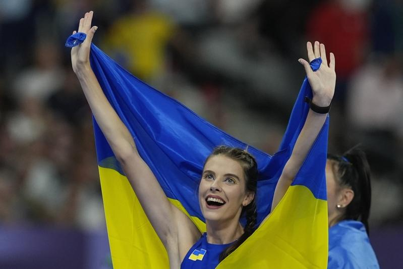

乌克兰女子跳高选手4日在巴黎奥运穿金戴铜，「跳高女神」马胡奇克（Yaroslava Mahuchikh）轻松兑现夺金承诺，铜牌也落在同胞身上。马胡奇克不仅写下世界纪录，如今也成了世锦赛冠军与奥运金牌得主。
综合法新社与路透报导，马胡奇克4日以2公尺的高度拿下奥运女子跳高金牌，澳洲选手奥利斯拉格斯（Nicola Olyslagers）因尝试相同高度的次数较多，获得银牌。
马胡奇克在力拚2公尺04失败后，与奥利斯拉格斯都未能跳过2公尺02，最后靠着第1次挑战2公尺就成功，微笑着收下金牌。
澳洲选手派特森（Eleanor Patterson）与另一位乌克兰选手吉拉成柯（Iryna Gerashchenko）则是以1公尺95并列铜牌。
比赛结束后，吉拉成柯用双臂拥抱着同胞马胡奇克，两人肩上披着乌克兰国旗，绕着体育场慢跑。
马胡奇克4日涂上代表乌克兰国旗颜色的蓝、黄色眼线出赛，不过她4日的表现，远不如上个月在巴黎举行的钻石联赛。
马胡奇克当时是跳出2公尺10的世界纪录。原先的世界纪录是由保加利亚女将柯斯塔狄诺娃（Stefanka Kostadinova）所保持，她在1987年于罗马跳过2公尺09，这也是田径界保持最久的世界纪录之一。
不过马胡奇克4日在奥运的表现足以获得金牌，这也是她丰富获奖纪录上唯一缺少的奖牌。
俄罗斯2022年入侵乌克兰后，马胡奇克逃离位于第聂伯罗（Dnipro）的家，在战火肆虐下，她不得不搭了6天的车前往贝尔格勒（Belgrad）进行训练与比赛。这段时间她一直保持竞技水准，并在打破世界纪录几周之后，又拿下奥运金牌。
乌克兰总统泽伦斯基（Volodymyr Zelenskyy）在社群媒体X上表示：「我们非常自豪！也很感谢她取得好成绩。乌克兰人知道如何变得强大，如何赢得胜利。」
巴黎奥运热话题
- 麟洋配赛后大合照 李洋「1句话」逗笑马来西亚选手
- 与约克维奇打到抢7落败 阿尔卡拉斯：我有过机会
- 30岁生日礼物 中国刘洋夺金 想吃三鲜馅饺子
- 中国混泳接力夺金 英国蛙王：对药检制度没信心
- 选手村太热没冷气 意大利金牌索性去公园睡觉